Une copropriété neuve à concevoir
Le projet portait sur la construction d'une copropriété de 10 logements (694 m², du T2 au T4), en phase avant-projet. L'enjeu : concevoir des bâtiments conformes à la RE2020 et constituer le dossier nécessaire à l'obtention du permis de construire.
Modéliser pour optimiser
J'ai saisi l'ensemble du bâti et des systèmes sur un logiciel de calcul réglementaire : chauffage, eau chaude sanitaire, ventilation, métré et calcul des déperditions. Les ponts thermiques ont été étudiés séparément sur un logiciel spécialisé, pour fiabiliser le bilan.
L'empreinte environnementale
L'analyse du cycle de vie évalue l'impact carbone du bâtiment, des matériaux jusqu'à son exploitation. Je l'ai intégrée à l'étude pour vérifier le respect des seuils carbone réglementaires.
Le dossier réglementaire
L'étude s'est conclue par la constitution du dossier attestant la conformité RE2020, pièce nécessaire au dépôt du permis de construire.
Livrables : étude thermique réglementaire, étude des ponts thermiques, analyse du cycle de vie et attestation de conformité RE2020.
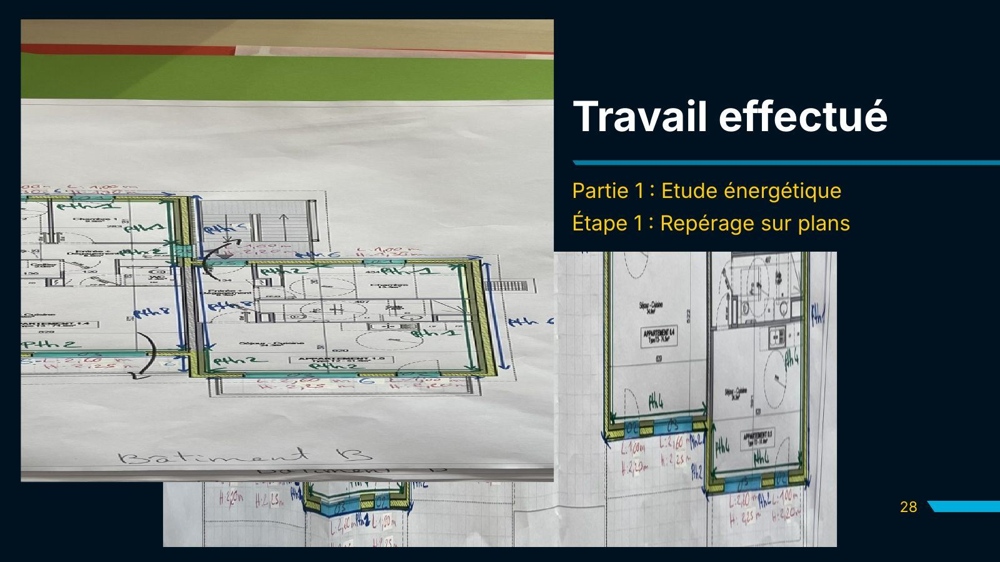
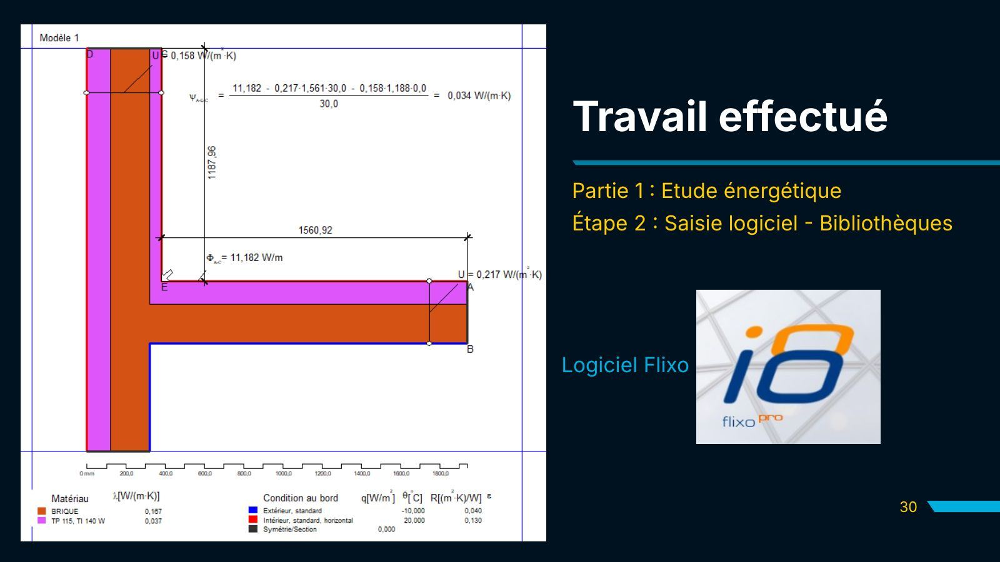
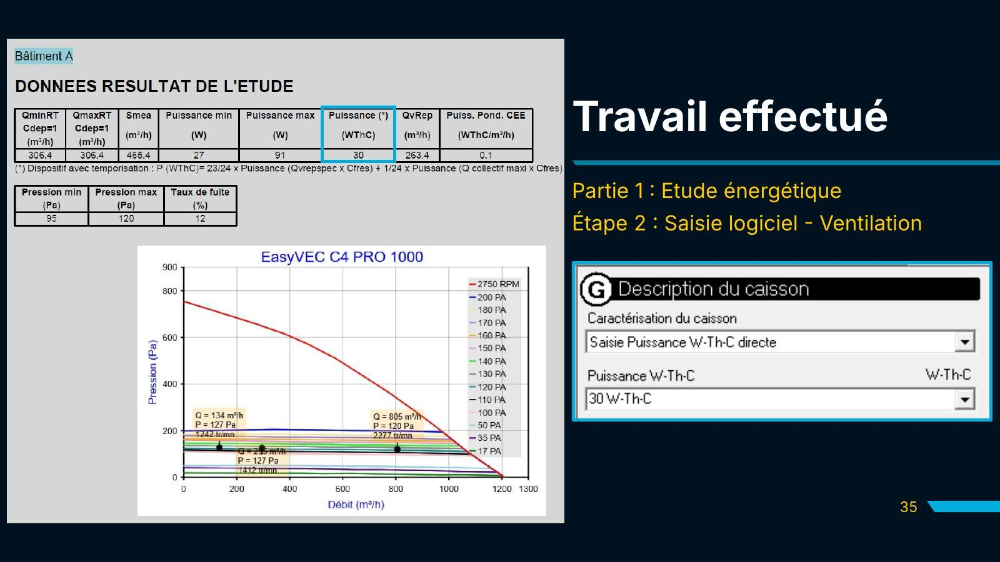
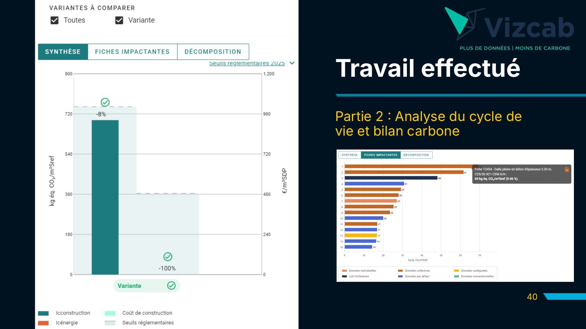
La présentation complète
Diapositives de ma présentation (BUT MT2E, 2e année), de la saisie à l'ACV. Cliquez sur une diapositive pour l'agrandir, puis naviguez avec les flèches.
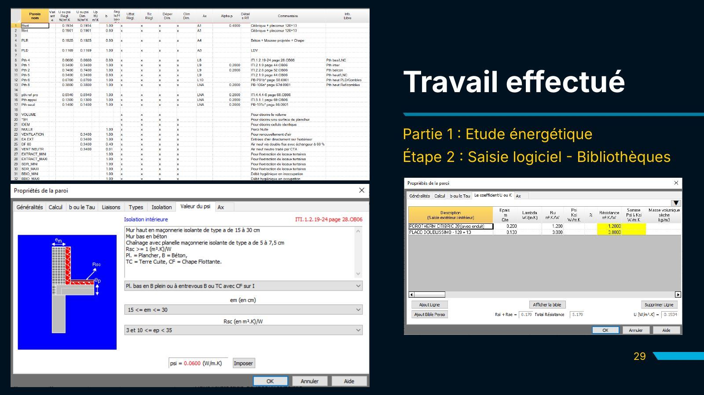
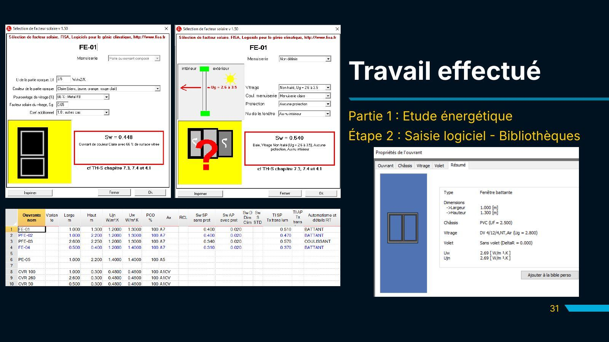
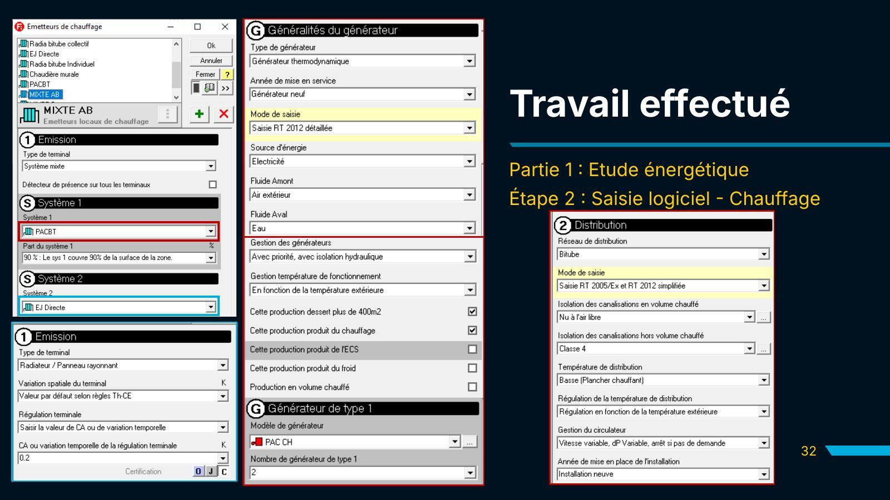
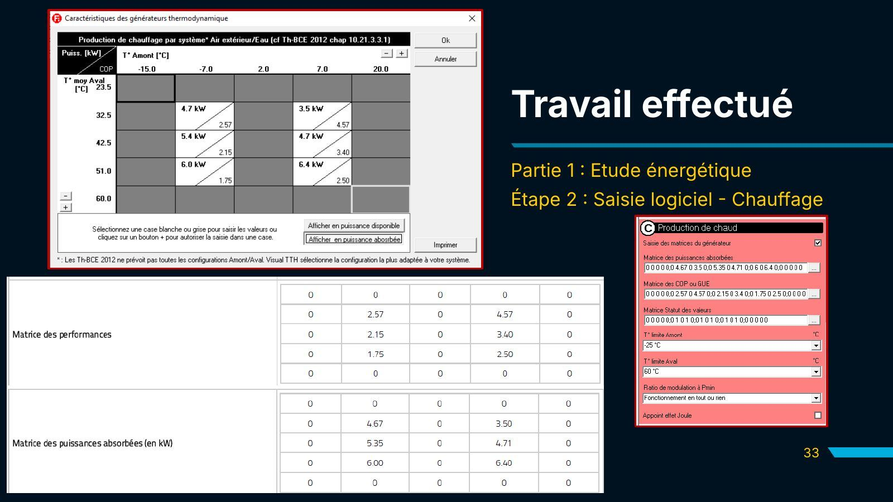
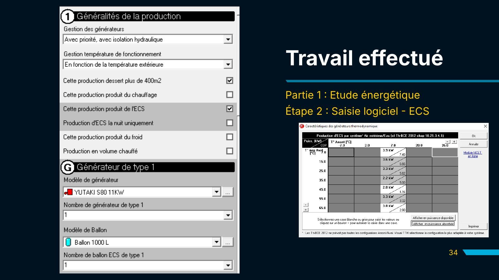
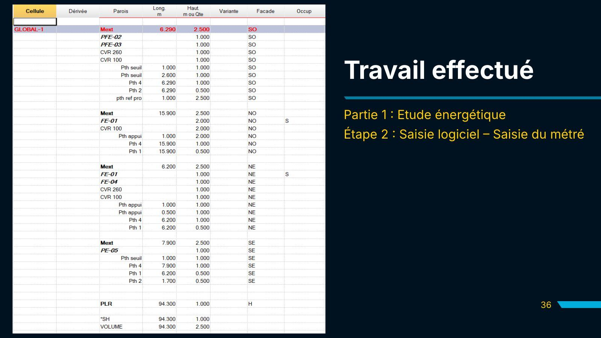
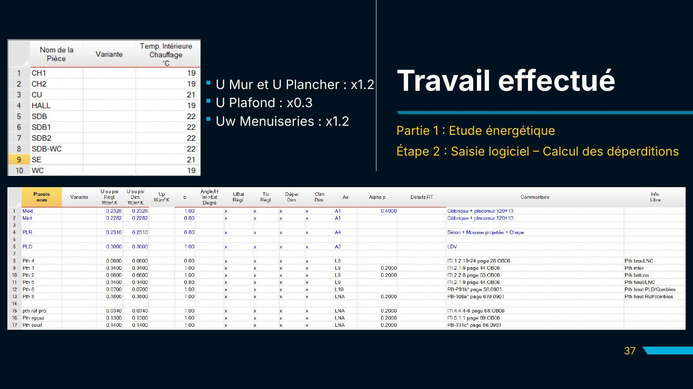
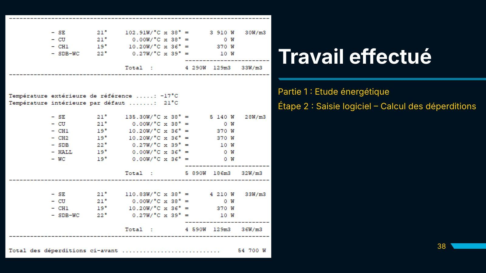
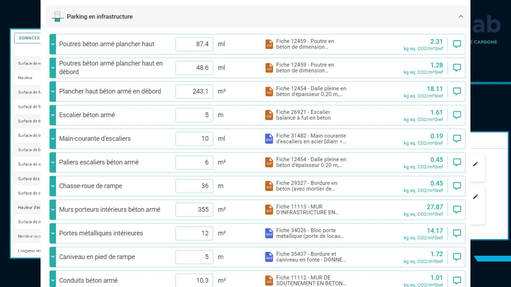